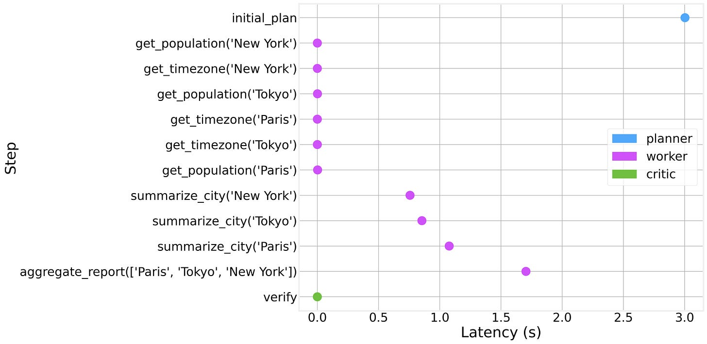

THE FRONT PAGE
EDITOR'S NOTE: A busy day in the latent space. #Judgment and craft
State regulators are requiring AI infrastructure developers to fund dedicated sub-transmission lines upfront rather than socializing grid costs across residential rate bases. While this prevents consumer price spikes, it threatens to slow buildout timelines in the nation's dense data center alley.

By pairing post-training reinforcement learning with serverless Postgres branching, Castform and Neon claim to match GPT-5.6 Sol's multi-hop search accuracy using a modest 4-billion parameter model—slashing per-query overhead by two orders of magnitude. The tradeoff is specialized brittle domain performance: while small, tuned models dismantle generalist frontier APIs on narrow enterprise tasks, they collapse the moment queries drift outside their curated reward functions.

Prime Agent pairs reinforcement learning with automated environment loops to refine tool use, trading the predictable safety of hand-engineered heuristics for autonomous gains that remain notoriously difficult to audit.

As standard prompt loops fail in production, teams are building explicit software harnesses with typed schemas, execution DAGs, and tiered memory to force predictability onto LLMs. The tradeoff is sobering: you recover software reliability only by reintroducing the exact brittle maintenance overhead that neural networks were supposed to let us skip.
As teams delegate execution to autonomous coding agents, Ship Safe offers an open-source scanner to catch vulnerable patterns before deployment. It restores a margin of static discipline to machine-generated code, though adding automated guardrails to police autonomous tools introduces its own layer of latent friction.

Cloudflare is pitching its global edge network as the foundational environment for persistent AI workloads, pushing execution away from localized runtimes into distributed serverless primitives. The move abstracts infrastructure further away from developers, trading direct architectural control and debugging visibility for deployment speed.
MODEL RELEASE HISTORY
No confirmed model releases were detected for this edition date.